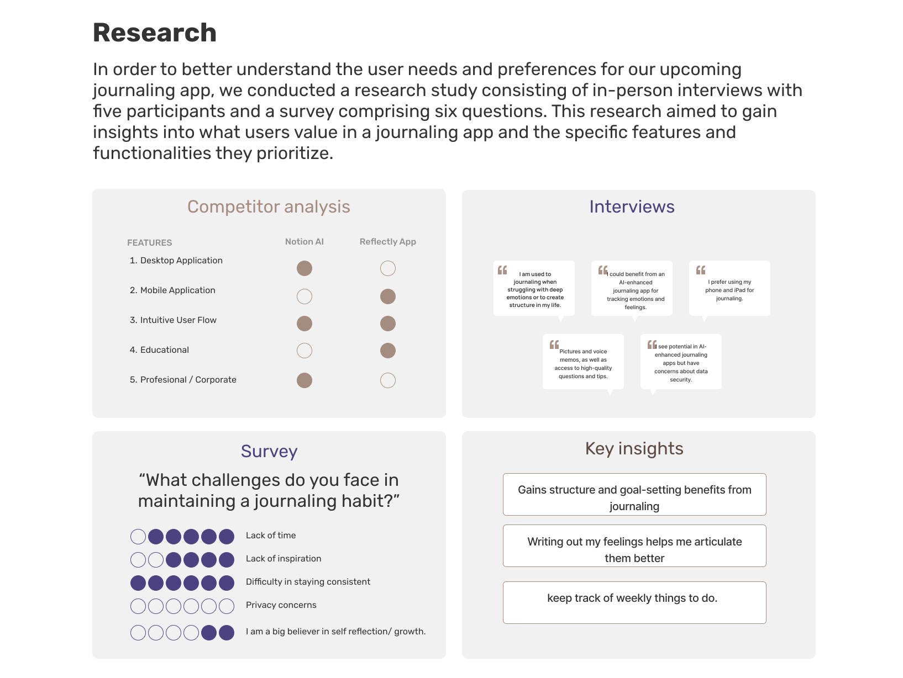
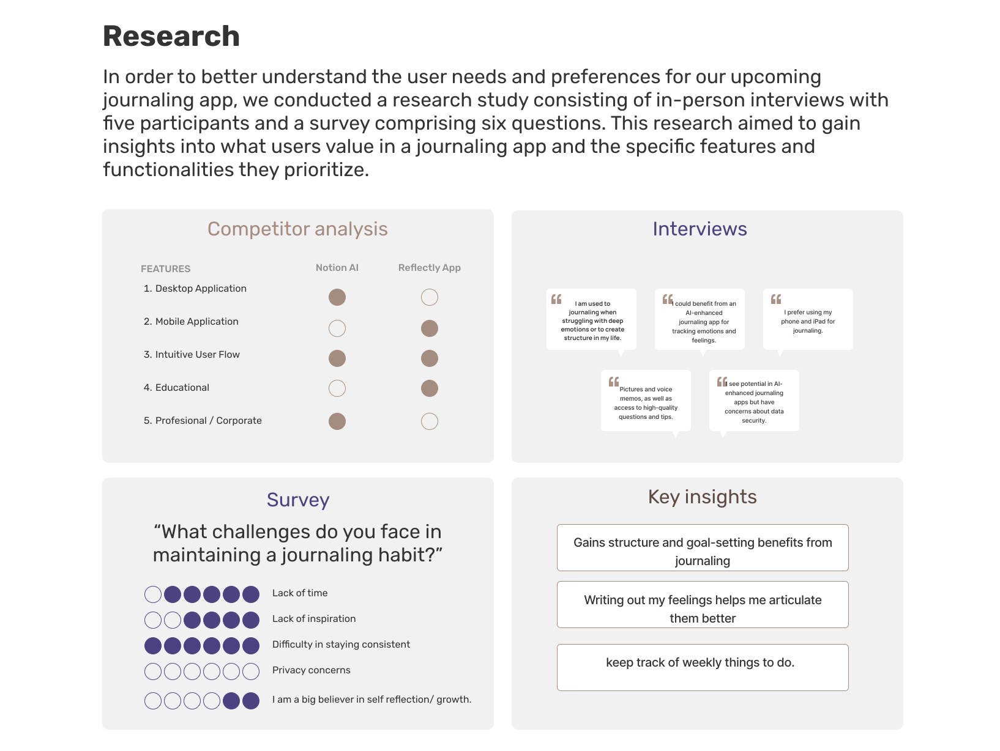

JournAI, An AI Enhanced Journaling App
Background
For the final project of our bootcamp, our team member, Sabrina, pitched an idea of creating a journaling app with AI features. The goal is to leverage AI to offer a more personalized and insightful experiences throughout the users' journaling journey. The AI can offer prompts, suggestions, or even emotional support by assessing user input, sentiments, and patterns, thereby improving the user's capacity to think about their experiences. Moreover, AI can also classify and organize all entries, making it easier to revisit and gain valuable insights. The ultimate goal is to facilitate self-reflection, self-improvements, and a deeper understanding of one's emotion and life.
Project Overview
This project was done in a group of five including myself. The timeline for this project was 3 weeks. I undertook one user interview, contributed to refining user insights and problem statements, created wireframes, and the coding for the final website.

 

Each team member was responsible to interview one person. With the user insights, survey of six questions, and competitive analysis, our team was able to have a good grasp at what the user needs.

Out of all the ideas that we brainstormed, we decided that focusing on developing functionalities related to reminder features, security and privacy enhancements, and leveraging AI to delve into patterns and trends within personal entries is the optimal approach.


Wrap Up and Future Plans
Due to the short timeline, we focused on developing the AI pattern recognition features and assisting with prompts. If we were to take this project to the next step, our next area of focus would include enhancing security/privacy,
ensuring cross-platform compatibility, incorporating reminder features, and providing more personalized choices. Furthermore, would also like to perform more user testings to iterate on the current designs.